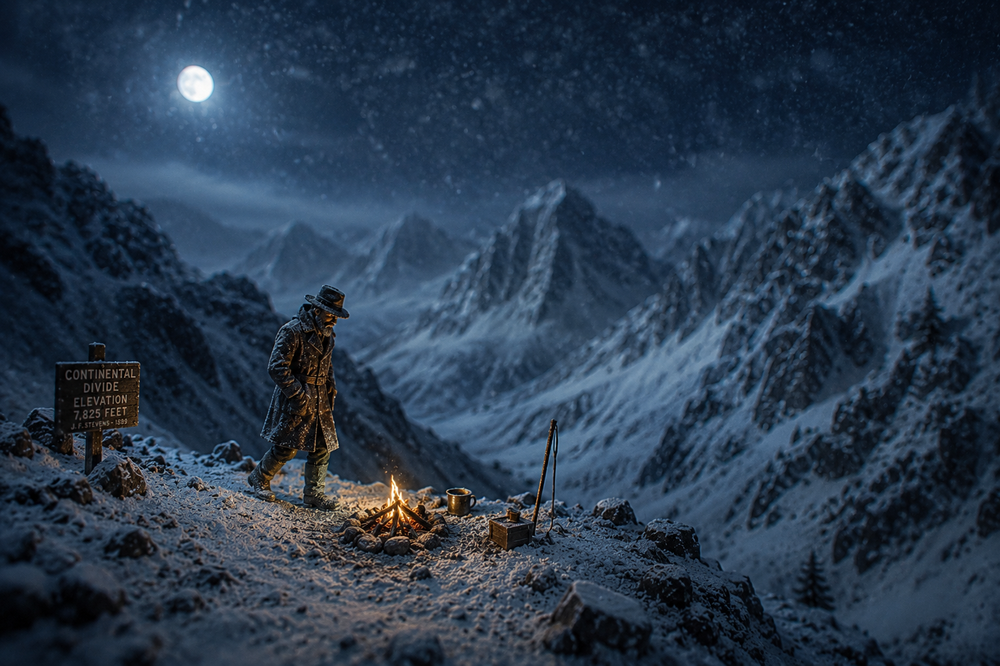

The Night He Walked Alone: John F. Stevens' Discovery of Marias Pass

In December 1889, a self-taught engineer from rural Maine named John F. Stevens had a problem that amounted to the entire future of James J. Hill's railroad: find a pass through the Montana Rockies, or don't come back. Stevens had virtually no formal education past high school. What he had was stubbornness, a high tolerance for physical suffering, and a mule team that was about to prove inadequate. Hill, the railroad magnate who was building the Great Northern Railway without a single dollar of government subsidy—a thing no other transcontinental had ever attempted—needed a low-elevation crossing through the Continental Divide. Every other route involved grades that would bankrupt him in fuel and equipment costs before the line was half-built. Stevens set out from Havre, Montana with improvised snowshoes, a Flathead Indian guide named Coonsah, and no particular plan for what would happen when the snow got bad enough to kill them both.
The Pass That Lewis and Clark Missed
The pass Stevens was looking for wasn't exactly a secret. The Blackfeet and other Indigenous peoples of northwestern Montana had been crossing it for generations. What it was, from the perspective of the American railroad industry, was undocumented. Lewis and Clark, for all their extraordinary traveling through the West, had somehow missed it entirely. The pass sat at 5,216 feet elevation on the Continental Divide—the lowest crossing between Canada and central New Mexico—and it was sitting there unused, or at least unrecorded, while railroad engineers spent years exploring routes that involved grades twice as steep and construction costs three times as high.
Hill had a hunch. He sent Stevens to confirm it. Stevens left Havre in November 1889 with his mule team, Coonsah, and a quiet confidence that the terrain would eventually tell him what he needed to know. It did, but not before it told him several other things first.
The snow, as they climbed higher, crossed the line from obstacle to adversary. The mules began to falter. At a false summit—not yet the real pass, just a cruel preliminary—Stevens made the calculation that would define the entire trip. The animals couldn't go further. Coonsah, who understood these mountains better than anyone, built a fire and stayed with the mules. Stevens continued alone into the gathering darkness. He was carrying improvised snowshoes and the knowledge that if he stopped moving in what was coming, he wouldn't start again.
Forty Below, and All Night
On December 11, 1889, Stevens reached the summit of Marias Pass. He confirmed it the way a practical man confirms anything: he watched the Flathead River flow west, which meant he was on the Pacific side of the divide, which meant he had found the route Hill needed. The discovery took about thirty seconds. What came next took the rest of the night.
The temperature dropped to forty degrees below zero. Darkness fell hard and total. The snow at the summit was deep enough that Stevens couldn't dig down to bare ground to build a fire—there was nothing to build a fire on. He was at 5,216 feet in December in Montana with no shelter, no fire, and no way to get warm except to keep moving.
He spent the entire night walking back and forth along a stamped-down path in the snow—jumping, pacing, moving constantly—because stopping meant freezing to death, and he had a railroad to save.
That is what John F. Stevens did from dusk until dawn on December 11, 1889. He didn't sleep. He didn't sit. He paced back and forth through the absolute darkness at one of the lowest points on the Continental Divide, in killing cold, keeping his muscles working and his blood moving through sheer refusal to stop. It was not elegant. It was not the kind of heroism that gets painted on murals. It was just a stubborn man from Maine walking in circles all night because the alternative was unacceptable.
When morning came, he descended toward the false summit where Coonsah waited, and found the guide nearly dead in the snow. The fire had gone out. The cold had done its work. Stevens roused him, got him moving, built the fire back up, and then helped him down the mountain to the Blackfeet agency. They both made it. The mules did not.
A Pass That Built an Empire
What Stevens carried out of those mountains was the most valuable piece of railroad intelligence in North America. The route through Marias Pass shortened the Great Northern's mainline by more than 150 miles compared to any alternative. The grades were manageable—a maximum of 1.8 percent on the eastern approach, compared to the murderous grades other railroads were fighting through the Rockies. Hill had what he needed.
The Great Northern Railway was completed on January 6, 1893, at Scenic, Washington. It was, and remains, the only transcontinental railroad in American history completed without going bankrupt and without a single dollar of government land grants or subsidies. That achievement traces directly back to one night in December 1889 when a man with no formal engineering degree walked in circles at 5,216 feet rather than lie down and die.
Stevens didn't stop there. He went on to design the original Cascade Tunnel, discover Stevens Pass through the Cascade Mountains—which still bears his name—and serve as Chief Engineer of the Panama Canal under President Theodore Roosevelt beginning in 1905. When critics complained that the canal work was moving too slowly, Stevens cut through the noise with a sentence that reveals everything about his priorities: "The digging is the least thing of all." He meant it. He spent his first years focused on eliminating yellow fever from the Isthmus and building the infrastructure needed to house and feed 30,000 workers, understanding that you can't dig anything if your workers are dead.
John F. Stevens lived to age 90, dying in 1943 after a career that included some of the most consequential engineering work in American history. Today, a 60-foot stone obelisk and a statue of Stevens stand at Marias Pass, on Highway 2 in Montana, at almost exactly the spot where he spent that impossible December night walking back and forth in the dark. The railroad still runs through the pass. The highway crosses it year-round, the northernmost U.S. mountain pass open to traffic in every season. The Blackfeet always knew it was there. It took a stubborn man from Maine freezing to death to make sure the rest of America found out.
Sources & Further Reading:
- John F. Stevens - PBS American Experience
- Marias Pass - Wikipedia
- John Frank Stevens - Wikipedia
- John Frank Stevens - Encyclopedia Britannica
- John Frank Stevens - ASCE Notable Civil Engineers
Written by Kevin Sotka for meatbagmade.com. Got a favorite railroad story? Drop me a line at meatbagmade@gmail.com or find me on X/Twitter at @TrainDewd. Subscribe to the newsletter on Substack for more Pacific Northwest railroad history.